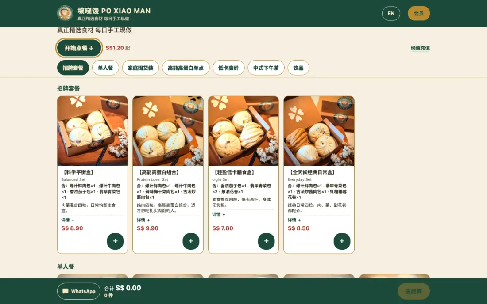
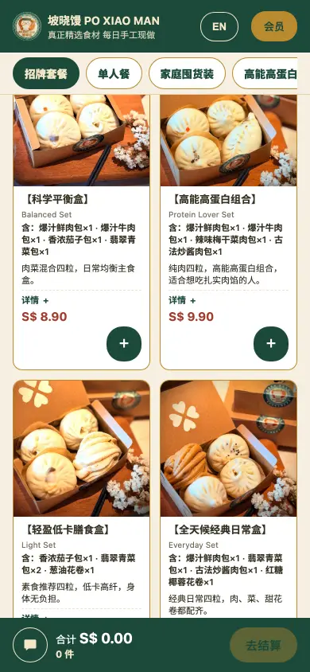

系统上运行着什么
- 在线点餐页、店主后台、POS 与厨房，均运行在 Hawkerline 的来源系统上。
- 使用 Cloudflare Workers 与 D1。
- 接受 Stripe 实时支付。
- 中英双语菜单，包含套餐、家庭囤货装与饮品。
- 点餐页在 poxiaoman.com；后台、POS 与厨房使用同一个 Worker 的各自子域名。
点餐页


坡晓馒 poxiaoman.com 公开点餐页截图。


坡晓馒 poxiaoman.com 公开点餐页截图。